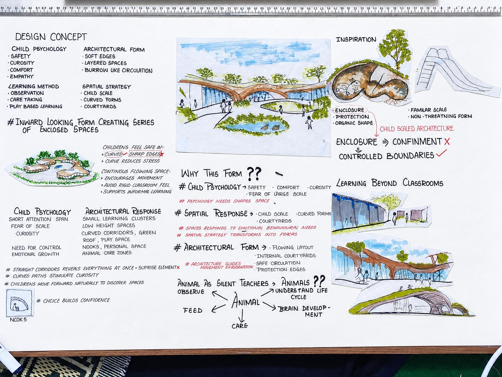
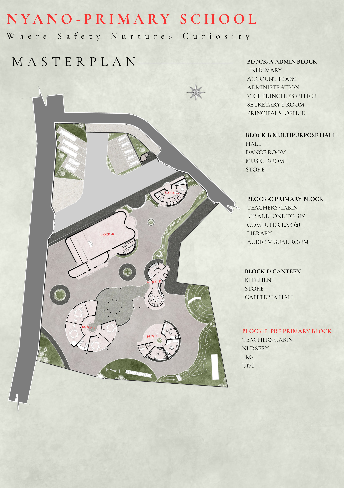
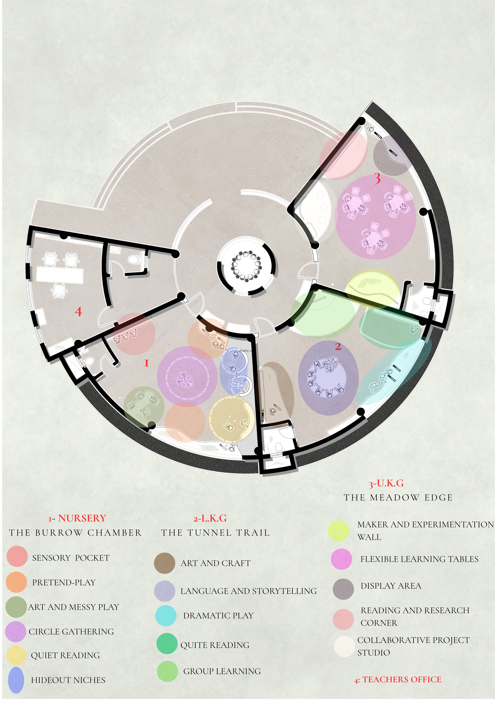
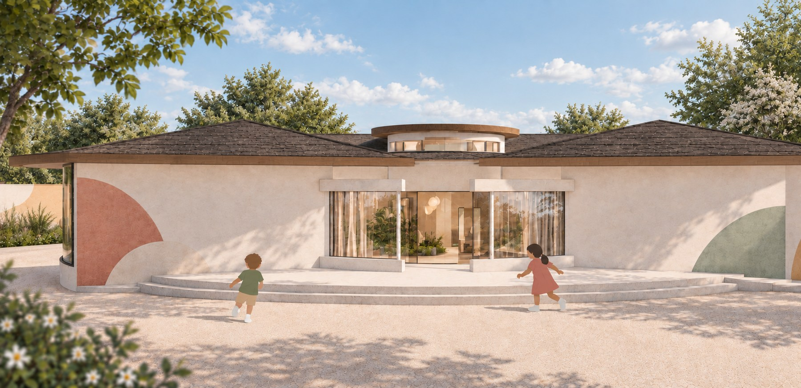
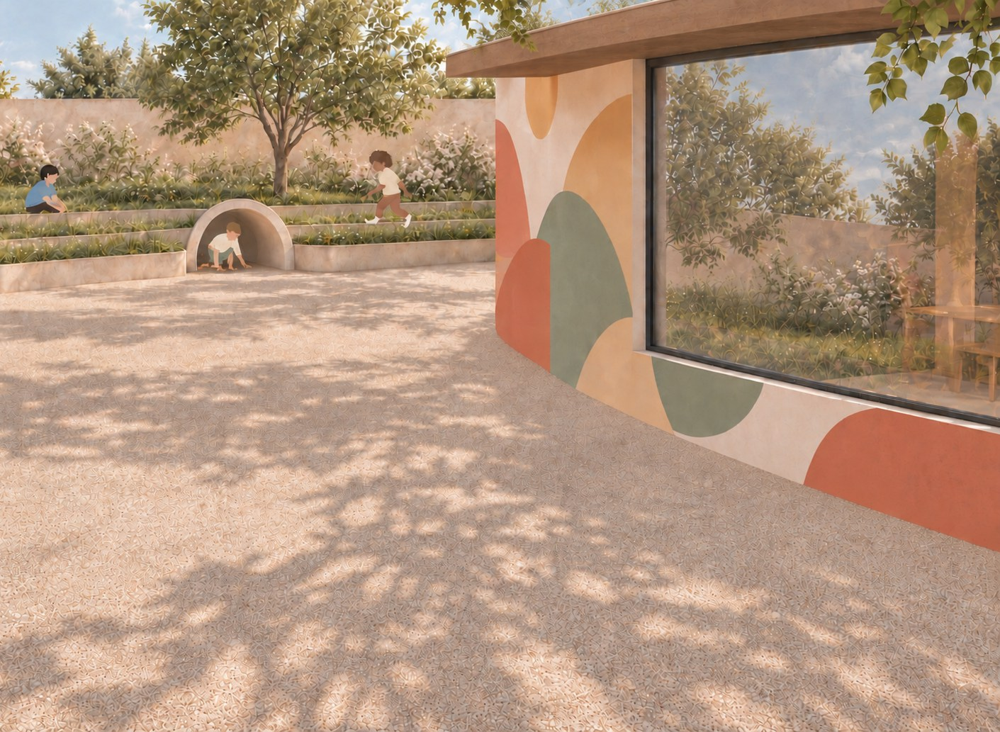

02 · Educational architecture
NYANOLEARNING SCHOOL
Brief
Design a pre-primary school at the quieter edge of a site in Bhaktapur: a safe, warm setting where the youngest children begin to separate from home. The project explores how a building can support play, security and gradual independence for the nursery, LKG and UKG levels.
Concept · learning through the burrow
Like a rabbit burrow, the school is a series of protective, child-scaled spaces arranged along a journey from enclosure towards openness. Children first discover a sheltered world they can claim as their own, then take their first steps outward, through shared spaces, towards light, play and each other.





